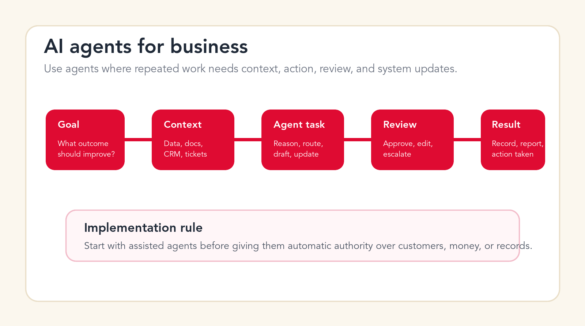
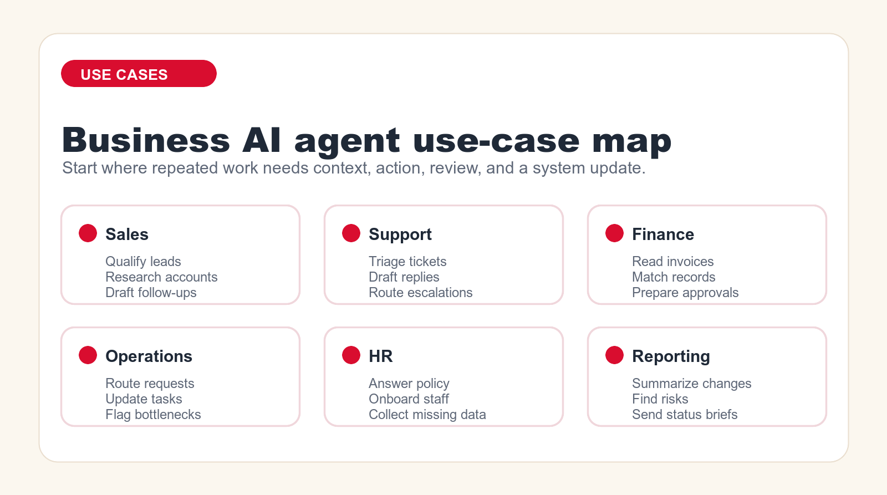

AI Agents for Business: Real Use Cases, Costs, and Implementation Plan
AI agents for business are useful when they are tied to real workflows: finding context, drafting work, updating systems, escalating risk, and helping teams complete repeated processes faster.

Implementation rule
Start with assisted agents before giving them automatic authority over customers, money, or records.
Focus
AI agents for business
Best for
Use cases and cost
What it covers
Use cases, costs, and rollout
Main service
AI Agent Development
TL;DR
AI agents for business are best used on repeated workflows where the agent can read context, reason through next steps, draft or prepare work, update systems, and hand risky decisions to a person. Strong first use cases include sales lead qualification, account research, support triage, internal knowledge help, invoice processing, CRM cleanup, reporting, operations routing, onboarding, procurement intake, marketing operations, and IT help desk triage. Cost depends on scope: a simple assisted pilot may sit in the low thousands, controlled workflow builds often land in five figures, and multi-system or customer-facing agents can move into larger custom implementation budgets. Start with one measurable workflow, keep humans in review, and expand only after accuracy, adoption, and ROI are proven.
AI agents for business are moving from demo slides into real operations. The market is no longer only about chatbots that answer questions. Business teams are now looking at agents that can check a CRM record, read a support ticket, summarize a document, draft a response, route a request, create a task, prepare an approval, or tell a manager what changed overnight. That sounds powerful, but it also creates risk if the agent is dropped into a messy workflow without clear rules.
The most important question is not whether AI agents are impressive. The question is where they should be allowed to work first. An agent that helps a sales rep prepare for a call is low-risk. An agent that sends an offer to a customer, changes a contract, approves an invoice, or updates a production record is different. It needs data boundaries, permission design, human review, testing, logging, and a way to recover from mistakes.
This guide gives you a practical way to think about business AI agents. It covers what they are, how they differ from chatbots and basic automation, 15 real use cases to consider first, realistic cost planning, implementation risks, and a step-by-step rollout plan. The goal is not to make agents sound magical. The goal is to show where they can be commercially useful and how to implement them without creating a new operational problem.
Current vendor platforms are moving quickly. OpenAI, Microsoft, Salesforce, Zapier, and other software companies are investing heavily in agent-style workflows. That matters because business teams will see more agent features inside tools they already use. But the presence of agent features does not remove the need for workflow design. A business agent is only valuable when the workflow, data, review rules, and measurement system are clear.
Quick Answer: Use AI Agents Where Work Has Context, Action, and Review
The best early AI agents for business do not make final high-stakes decisions. They prepare work. They gather context. They classify requests. They draft next steps. They flag exceptions. They update low-risk fields. They ask for human approval before touching customers, money, legal commitments, employee records, or sensitive data. That is where business value appears without overextending trust.
A good first agent has five parts. It has a clear trigger, such as a new lead, ticket, invoice, request, report, or document. It has access to the right context, such as CRM data, knowledge base articles, email history, policy documents, invoice fields, or project status. It has a narrow task, such as draft, classify, extract, compare, route, summarize, or recommend. It has a review point where a person can approve, edit, or reject the output. It has a measurable result, such as faster response time, cleaner CRM records, fewer manual checks, shorter cycle time, or better follow-up quality.
If a proposed agent cannot be described in that structure, it is probably not ready. If the owner cannot explain what the agent reads, what it changes, who reviews it, and how success is measured, the project should stay in planning. AI agents work best when the workflow is boring enough to repeat and valuable enough to improve.
| Agent type | Typical job | Risk level | Best first step |
|---|---|---|---|
| Assistant agent | Research, summarize, draft, classify, prepare. | Low to medium | Use with human review and clear examples. |
| Workflow agent | Move work between systems, create tasks, update records. | Medium to high | Start with limited permissions and audit logs. |
| Customer-facing agent | Answer customers, collect details, resolve routine requests. | High | Begin with drafts, escalation, and confidence thresholds. |
| Decision-support agent | Recommend next actions, surface risks, compare options. | Medium to high | Keep the person accountable for final judgment. |
| Custom business agent | Use proprietary data, integrations, rules, and workflows. | Depends on scope | Design around one measurable business process. |
What Are AI Agents for Business?
AI agents for business are software systems that use AI to work through a defined business task with context, instructions, tools, and boundaries. They may read information, decide what step comes next, call a tool, draft a response, update a record, ask a person for approval, or produce a report. The important part is not that the agent uses AI. The important part is that the agent is connected to a workflow.
A basic chatbot waits for a user to ask a question. A simple automation follows a fixed rule: when this happens, do that. An AI agent sits between those ideas. It can understand messy input, apply instructions, use context, and produce a useful next step. It can deal with some variation instead of needing every case to be perfectly structured.
That flexibility is why agents are attractive. Real business work is full of exceptions. A lead can arrive with partial data. A ticket can be emotional and unclear. An invoice can have missing fields. A project update can be scattered across messages. A customer request can require context from multiple systems. AI agents can help with that ambiguity, but only if they are given narrow authority and a good operating environment.
AI Agent vs Chatbot vs Workflow Automation
A chatbot is mainly conversational. It answers questions, collects information, and guides a user through a response. A workflow automation is mainly procedural. It runs known steps across tools when a defined trigger occurs. An AI agent can be conversational, procedural, and contextual at the same time. It can read a messy request, decide which path applies, and prepare or perform the next step.
The difference matters because the build approach changes. A chatbot needs conversation design and escalation. A workflow automation needs trigger logic, data mapping, and integration testing. An AI agent needs all of that plus prompt design, context retrieval, tool permissions, evaluation, logging, and confidence thresholds. That is why serious agent work is often closer to implementation than to a simple software purchase.
A Useful Business Definition
A business AI agent is a controlled worker inside a process. It does not replace the whole process. It handles the parts where AI is good: reading, summarizing, classifying, extracting, drafting, comparing, recommending, and preparing system actions. The company still owns the workflow, the data, the approvals, the customer experience, and the result.
One-Sentence Test
If you cannot finish this sentence, the agent idea is too vague: "When this trigger happens, the agent reads this context, prepares this output, asks this person for review, and improves this measurable result."

15 Real AI Agent Use Cases for Business
The strongest AI agent use cases share the same pattern: the work repeats often, the input varies, the task needs context, and the result can be reviewed. The following list is written for business teams that want practical places to start, not fantasy projects that require a complete rebuild of the company.
1. Sales Lead Qualification
A sales lead qualification agent can read new form submissions, enrichment data, company websites, CRM history, and campaign source data. It can score the lead, identify missing information, suggest the right segment, prepare a first response, and route the lead to the right owner. The agent should not replace sales judgment on important opportunities, but it can remove the manual sorting that slows response time.
This is a strong first use case because the workflow is frequent and measurable. You can compare response speed, qualification quality, conversion by segment, and rep time saved. Keep the first version narrow. Let the agent classify, enrich, and draft. Let humans approve customer messages until performance is proven.
2. Account Research and Meeting Prep
Account research is repetitive and time-consuming. An AI agent can prepare a briefing before a sales call by reading CRM notes, recent emails, support history, website updates, LinkedIn-style public signals where allowed, and internal account plans. It can summarize the account, list open risks, suggest questions, and prepare talking points for the rep.
The value is not only time saved. Better preparation improves conversation quality. The agent should produce a concise brief, not a long generic summary. It should show sources or at least point to the records it used. The rep should always review before relying on the briefing in a live conversation.
3. Sales Follow-Up and CRM Hygiene
Many sales teams lose momentum after calls because notes are messy, next steps are unclear, and CRM fields are not updated. An AI agent can summarize a call transcript, extract commitments, draft follow-up, suggest next tasks, update non-sensitive CRM fields, and flag missing decision-maker information. It can also remind the rep when no follow-up has happened after a high-priority interaction.
This use case is practical because the agent works behind the rep instead of speaking for the company. The safest rollout is to draft and recommend first. Once the team trusts the output, the agent can update low-risk fields automatically while asking for approval on important notes, customer-facing emails, or forecast changes.
4. Customer Support Triage
A support triage agent can read new tickets, detect intent, identify urgency, suggest category, check customer plan, scan knowledge base articles, and route the case. It can also flag angry customers, compliance-sensitive requests, account cancellations, technical outages, or tickets with missing information. The agent reduces manual sorting and helps the support team respond faster.
The first version should focus on routing and suggested replies, not full autonomous resolution. Support quality depends on accuracy, tone, and escalation. A controlled agent can draft the answer, link the relevant help article, and ask the support rep to approve. Over time, low-risk questions can move toward assisted self-service while sensitive cases stay human-owned.
5. Customer Reply Drafting
Reply drafting is one of the most useful business agent tasks because it saves time without handing over final authority. The agent reads the ticket, previous customer history, policy, product documentation, and tone guidance. It drafts a response that the support rep edits and sends. This can make the team faster while preserving human accountability.
The risk is that the draft can sound confident even when the agent is missing context. For that reason, drafts should include uncertainty markers, internal notes, and source references when possible. The agent should never invent refunds, warranties, delivery timelines, legal commitments, or technical guarantees. It should escalate when the requested answer is outside approved material.
6. Internal Knowledge and Policy Assistance
Internal knowledge agents help employees find answers across policies, handbooks, process documents, operating procedures, and internal FAQs. Instead of searching folders or asking busy managers, employees can ask a question and receive an answer with links to the source material. This is useful for HR, operations, finance, IT, and onboarding.
The implementation challenge is content quality. If the source documents are outdated, contradictory, or scattered, the agent will expose that mess. Before launching, define the approved source set, owner, update cadence, and escalation path. The agent should answer from approved material only, and it should say when it does not know.
7. Invoice Intake and Document Processing
Finance teams can use AI agents to read invoices, extract fields, compare vendor names, match purchase orders, identify missing information, route exceptions, and prepare approval packages. The agent can reduce manual data entry and help accounts payable teams focus on exceptions instead of routine document handling.
This workflow needs careful control because it touches money and accounting records. The agent should not pay invoices on its own. It should extract, compare, flag, and prepare. Human approval should remain in place for payment release, vendor changes, bank detail changes, and unusual amounts. The first measurable outcome is usually fewer manual touches per invoice and shorter approval cycle time.
8. Operations Request Routing
Operations teams often receive messy internal requests through email, forms, chat, and project tools. An AI agent can classify the request, identify the required data, ask for missing details, create a task, assign the right owner, and summarize the request in the right format. This is useful for facilities, procurement, internal operations, service delivery, and client operations teams.
The agent should be measured on cycle time, rework, missing data, and handoff quality. A strong version prevents vague requests from entering the work queue. It asks the requester for the missing fields before a human starts work. This saves time and reduces frustration on both sides of the process.
9. Reporting and Executive Briefs
Reporting agents can summarize what changed across dashboards, project updates, tickets, sales pipelines, customer accounts, or finance reports. Instead of forcing leaders to read every source, the agent produces a concise brief: what changed, why it matters, what needs attention, and what is uncertain. This is especially useful for weekly operating reviews.
The agent should not replace the source dashboard. It should sit above it as a narrative layer. Good reporting agents include links back to the data, separate facts from interpretation, and show open questions. The risk is oversimplification. The guardrail is to keep the brief tied to source records and to show where confidence is low.
10. HR Onboarding and Employee Requests
HR teams can use agents to guide onboarding, answer policy questions, collect missing employee details, prepare manager checklists, and route requests to payroll, IT, or operations. The agent can reduce repetitive HR questions while keeping sensitive decisions with the HR team.
Employee data requires strong boundaries. The agent should not make employment decisions, interpret sensitive legal matters, or expose private information to the wrong person. It should use role-based access, approved policy content, and clear escalation rules. A good first project is onboarding assistance, where the agent helps new employees follow a checklist and find the right resources.
11. Procurement and Vendor Intake
Procurement workflows involve many repeated questions: who is the vendor, what is being purchased, is there a contract, does the spend need approval, is security review required, and is finance ready to process it? An AI agent can gather the missing information, classify the request, compare it against policy, and prepare an intake summary for the procurement owner.
The business value is clean intake. Procurement delays often happen because requests arrive without the information needed to approve them. The agent can prevent incomplete requests from moving forward and can help requesters understand what is needed. It should not approve vendors or legal terms without the proper review process.
12. Marketing Operations and Campaign QA
Marketing teams can use AI agents to check campaign briefs, generate draft variants, review landing page requirements, summarize performance, prepare content refresh recommendations, and flag missing assets. The agent is especially useful in the operations layer: making sure campaign steps, handoffs, and approvals are complete.
This is not about replacing strategy or brand judgment. It is about reducing repetitive coordination work. The agent can check whether UTM fields are present, whether the offer matches the landing page, whether required disclaimers are included, and whether assets are ready. Human marketers still own positioning, creative direction, and final approval.
13. IT Help Desk Triage
IT teams receive a large volume of repetitive requests: password issues, access requests, device problems, software questions, onboarding tickets, and incident reports. An AI agent can classify tickets, ask for missing diagnostics, suggest knowledge base steps, route access requests, and flag security-sensitive cases for immediate human review.
The agent should never bypass security controls. It can prepare, classify, and route, but permissions should stay controlled by existing identity and access management processes. The best first metric is reduced back-and-forth on missing details. If the agent can collect device, error, urgency, and access context before the IT owner touches the ticket, the queue becomes easier to manage.
14. Project Status and Delivery Coordination
Project managers spend a lot of time chasing updates, summarizing status, identifying blockers, and translating scattered comments into action items. An AI agent can read project tools, meeting notes, support tickets, and messages to produce a status brief. It can list blockers, identify overdue tasks, suggest owners, and draft a client-safe update for review.
The agent should not invent certainty. Project communication needs nuance. The best implementation separates internal risk notes from external client updates. It can give the project manager a working summary, then let the manager choose what to send. This saves coordination time without flattening judgment.
15. Quality Control and Exception Review
Many teams need a second set of eyes on repetitive work: data entry, application review, quote preparation, document packets, compliance checklists, support responses, or order details. An AI agent can review records against rules, detect missing fields, compare documents, and flag exceptions. It does not replace the final reviewer; it helps the reviewer focus on the items that need attention.
This use case is valuable because it reduces silent errors. The agent can look for inconsistencies that humans miss when volume is high. The rollout should begin with agent recommendations only. Track how often the agent flags true issues, false positives, and missed issues. If the agent improves review quality, it can become part of the standard quality process.
Free AI agent checkup
Find the first agent your business should build.
Send your email and we will reply with a first-pass recommendation for the safest workflow to automate first, the likely risk level, and the right implementation path.
No spam. We use this to reply with the recommendation.
90-Day AI Agent Implementation Plan
A business AI agent should be rolled out like an operational system, not like a novelty tool. The plan below is intentionally practical. It starts with one workflow, validates the business case, builds a controlled version, tests it with real examples, trains the team, and expands only when the metrics support expansion.
Days 1-15: Pick the Right Workflow
Start by listing repeated workflows where the team spends time reading, sorting, drafting, checking, routing, or updating. Do not begin with the most dramatic idea. Begin with the workflow that is frequent, painful, and easy to review. Good candidates include lead qualification, support triage, invoice intake, CRM cleanup, reporting briefs, and internal knowledge requests.
Score each candidate by volume, pain, data availability, risk, review effort, and measurable value. The best first project usually has high volume, clear examples, accessible data, low final-decision risk, and an owner who wants the change. If nobody owns the workflow, the agent will fail even if the technology works.
Days 16-30: Define the Agent Job
Write the agent job description in operational terms. Define the trigger, inputs, approved sources, actions, outputs, review point, fallback path, and success metric. Decide what the agent is allowed to do and what it is not allowed to do. This is where many projects improve before any code is written because vague ideas become specific workflows.
Create example cases. Include easy cases, messy cases, missing-data cases, and cases the agent should escalate. These examples become test data. Without test cases, teams judge agents by vibes. With test cases, they can evaluate accuracy, usefulness, and risk.
Days 31-55: Build the Assisted Version
The first build should usually be assisted. The agent prepares the work, and a person approves it. This keeps risk controlled while producing usable value. Build the retrieval layer, prompts, tool connections, form inputs, output templates, and review screen. Keep the interface simple. The business user should understand what the agent did and what they need to check.
If the agent needs to connect to systems, start with the fewest permissions possible. Read-only access is safer than write access. Draft mode is safer than send mode. Suggested updates are safer than automatic updates. The goal is to learn where the agent is reliable before increasing authority.
Days 56-75: Test, Train, and Measure
Test the agent against real historical examples. Track accuracy, usefulness, editing time, escalation rate, false positives, false negatives, and user feedback. If the agent saves time but creates quality concerns, fix quality before expanding. If the agent is accurate but hard to use, fix the interface. If the agent is useful for one subgroup and weak for another, narrow the scope.
Train the team on what the agent does, what it does not do, how to review output, how to report issues, and when to escalate. A business agent changes behavior. Training is not a side task. It is part of implementation.
Days 76-90: Expand Only What Proved Value
At the end of the pilot, review the evidence. Did the agent reduce cycle time? Did it improve quality? Did users adopt it? Did it reduce manual work without creating hidden review burden? Did it avoid serious errors? If the answer is yes, expand carefully. Add another team, another workflow step, another data source, or a limited automatic action.
If the answer is mixed, do not call the pilot a failure too quickly. It may show that the workflow needs cleanup, the knowledge base needs maintenance, the prompt needs better examples, or the user interface needs a clearer review flow. The point of a pilot is to learn before scaling.
Risks and Guardrails for Business AI Agents
AI agents create risk because they can sound confident, act quickly, and touch business systems. The main risks are wrong answers, missing context, unauthorized data access, poor escalation, over-automation, unclear accountability, and silent drift over time. These risks are manageable, but only if they are designed for from the beginning.
The most useful guardrails are simple. Limit the scope. Use approved data sources. Keep high-risk actions in human review. Log what the agent read and did. Make escalation easy. Show confidence or uncertainty. Test against real cases. Monitor results after launch. Assign an owner. Give users a way to report bad output. Keep version history for prompts, instructions, and workflows.
The agent should never be the only control in a sensitive process. Payments, legal commitments, HR decisions, medical or safety information, security access, refunds, and customer-impacting promises need stronger human oversight. The business can still use agents around those workflows, but the agent should prepare, check, and escalate rather than decide alone.
When Should You Hire an AI Automation Agency?
You can start internally when the agent is personal, low-risk, and does not need real system integration. For example, a manager can use an AI assistant to summarize notes, draft internal updates, or prepare questions. You should consider agency help when the agent must connect systems, use business data, support a team workflow, serve customers, update records, or operate under governance requirements.
An agency is useful because the hard part is usually not the model. The hard part is translating the business process into a controlled system. That includes choosing the right workflow, cleaning up the inputs, designing the review point, connecting tools, testing edge cases, documenting behavior, training users, and supporting the workflow after launch.
The right partner should ask operational questions before technical ones. They should want to know who owns the workflow, what goes wrong today, what data is trustworthy, what must be reviewed, what cannot be automated, how success will be measured, and what happens when the agent is uncertain. If the conversation starts and ends with tools, the project is at risk.
| Situation | DIY is enough? | Agency helps? | Reason |
|---|---|---|---|
| Personal drafting and research | Usually yes | Sometimes | Needs guidance more than implementation. |
| Team knowledge assistant | Sometimes | Often | Source control, access, and adoption matter. |
| CRM or help desk workflow | Rarely | Yes | Needs integration, testing, permissions, and review. |
| Customer-facing agent | No for serious use | Yes | Brand, accuracy, escalation, and risk are exposed. |
| Finance, HR, legal, security | No for automated decisions | Yes | Requires strong controls and human accountability. |
AI Agent Readiness Checklist
Before you build, answer these questions in plain language. What process are we improving? How often does it happen? Who owns it? What does success look like? What data will the agent read? Which data is off limits? What can the agent draft? What can it update? What must a person approve? What happens when the agent is uncertain? How will we measure output quality? Who fixes issues after launch?
If the team can answer those questions, the project is ready for scoped design. If the answers are vague, start with an AI opportunity review. The review should identify the workflow, map the current process, estimate value, define risk, and decide whether the first version should be a simple assistant, a workflow agent, or a custom agent build.
A useful agent is not built around the phrase "we need AI." It is built around a sentence like "we need to reduce manual lead qualification time by 50 percent while keeping sales reps in control of customer communication." That sentence creates an implementation path.
Implementation path
Turn one repeated workflow into a controlled AI agent pilot.
Go Expandia can map the workflow, define the guardrails, build the assisted version, and help your team measure the first result before scaling.
We use this to reply with next-step guidance.
FAQ: AI Agents for Business
What are AI agents for business?
AI agents for business are controlled systems that use AI to complete parts of a business workflow, such as reading context, classifying requests, drafting responses, preparing approvals, updating records, and escalating risky cases for human review.
What is the best first AI agent use case?
The best first use case is usually a repeated, measurable, lower-risk workflow such as lead qualification, support triage, account research, invoice intake, reporting summaries, or internal knowledge assistance.
How much does a business AI agent cost?
Cost depends on scope. A narrow assisted pilot may be in the low thousands, controlled workflow agents often require five-figure implementation budgets, and customer-facing or multi-system agents can become larger custom projects.
Can AI agents replace employees?
AI agents usually work best as workflow assistants, not full employee replacements. They can reduce manual work, prepare drafts, route requests, and flag issues, while people stay accountable for judgment, customer relationships, and high-risk decisions.
Do AI agents need an agency to implement?
Simple personal agents may not need an agency. Agents connected to CRM, support, finance, HR, operations, customer communication, or business data usually benefit from agency implementation because workflow design, integration, testing, permissions, and support matter.
About Bailey Roque
Bailey Roque writes for Go Expandia on AI automation, AI agent development, workflow design, AI consulting, and practical rollout models for business teams.
Related posts
Keep planning practical AI agents
Comparison
AI Agent Platform vs Agency
Decide whether a platform, an agency, or both fit your AI agent project.
Builder Guide
AI Agent Builder: No-Code vs Agency
Learn when no-code is enough and when custom implementation is safer.
Sales Guide
AI Sales Agent Workflows
See sales processes that are strong first candidates for AI agents.
Ready to Build a Business AI Agent With Guardrails?
Go Expandia helps teams choose the right workflow, design the agent, connect systems, keep review in place, and measure the first business result.